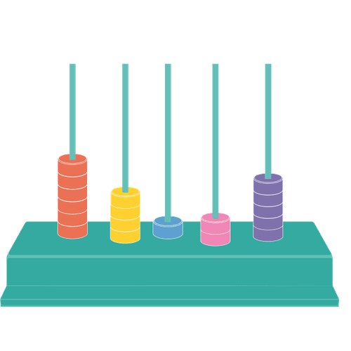

Mit der Academy erhaltet ihr im Business-Plan praxisnahe Lernmodule rund um Facilitation und wirksame Transformation.
Gemeinsam mit 9 Spaces zeigt Plan International Deutschland, wie wertebasiertes Arbeiten Orientierung gibt – nach innen wie nach außen.

Dieses Tool hilft euch dabei, ein individuelles Quoten-Set festzulegen, das zu euch als Team passt.
Dieses Tool hilft euch dabei, zu analysieren, ob eure Außenkommunikation die Realität eurer Teamzusammensetzung widerspiegelt.
Ein Tool, das dabei hilft, chronische Krankheiten bei der Arbeit zu thematisieren und Prozesse zu schaffen, um einen gesunden Umgang mit ihnen zu finden.
Unser fragenbasiertes Einsteiger*innen-Tool hilft euch, euer Büro oder Homeoffice nachhaltiger zu gestalten.